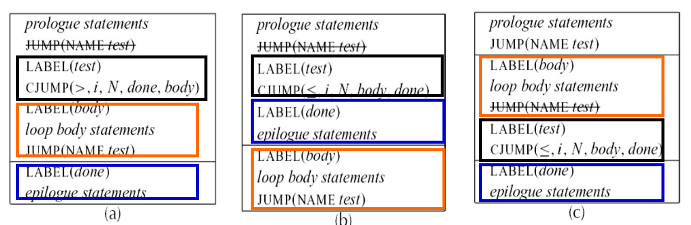

# Basic Blocks and Traces
# Canonical Form
IR 存在一些与机器语言不能完全对应的情况，和与编译优化分析相冲突的情况。
- CJUMP 能够转移到 t 或者 f，但是真正的机器语言在条件为假的时候直接下降至下一条指令（条件为真才跳转）
- 在表达式中使用 ESEQ 不太方便，会使子树不同的计算顺序产生不同的计算结果
- CALL 调用 CALL 作为参数的时候会有寄存器冲突、语句副作用（修改全局变量、改变堆内存，etc.）等问题
三种方法：
- Linearize: Transform trees into a list of canonical
trees without SEQ or ESEQ nodes - Basic blocks: Group statements into sequences with
no internal jumps/labels - Trace schedule: Order basic blocks so every CJUMP is followed by its false label
# 线性化
规范树（Canonical Tree）定义：
- 无 SEQ 或 ESEQ
- 每一个 CALL 的父亲不是 EXP (…) 就是 MOVE (TEMP t, …)
# 消除 ESEQ
# 规则
合并副作用，提升 ESEQ：
- ESEQ(s1, ESEQ(s2,e)) => ESEQ(SEQ(s1,s2),e)
- BINOP(op, ESEQ(s, e1), e2) ⇒ ESEQ(s, BINOP(op, e1, e2))
- MEM(ESEQ(s, e1)) ⇒ ESEQ(s, MEM(e1))
- JUMP(ESEQ(s, e1)) ⇒ SEQ(s, JUMP(e1))
- CJUMP(op, ESEQ(s, e1), e2, l1, l2) ⇒ SEQ(s, CJUMP(op, e1, e2, l1, l2))
# Commutativity（重点）
当 ESEQ 出现在 BINOP 的右操作数，即 时，我们不能再像之前那样简单地把 s 提升到整个 BINOP 之前，因为 e1 的求值在 e2 之前，否则可能影响 e1 的计算结果
Commutativity：交换性
- Commuting: s 不影响 e1 的结果
- rule:
- Non-commuting: s 会影响 e1 的结果，把 e1 的结果显算出来放到临时变量 t 里，再提升 s
- rule:
# 将 CALL 移到顶层
方法：立即将每一个返回值赋给一个新的临时寄存器
# 消除 SEQ
把 SEQ 变成一个线性语句表：
就可以认为是由语句组成的简单列表
# 处理 CJUMP
重排 CJUMP，使得每个 LABEL (l_f)$
分两步：1. 取一列 canonical tree 由它们形成 basic block 2. 对 basic block 进行排序形成 trace
# Basic Block
一个基本块是一段连续的指令序列，即:
- 第一个语句是一个
LABEL - 最后一个语句是
JUMP或CJUMP - 没有其他的
LABEL,JUMP或CJUMP
划分方法：
- 每一个
LABEL都对应一个基本块的开始 - 每一个
JUMP或CJUMP都对应一个基本块的结束 - 如果遇到
LABEL1->LABEL2, 就在LABEL2前面加一个JUMP到LABEL2 - 如果遇到开头没有
LABEL的，则加一个LABEL（比如程序的开头） - 出口处理：添加一个 LABEL
done表示出口处理的开始，并把 放最后一个 block 末尾
# Trace
现在我们可以按任意顺序来安排这些基本块，并且程序执行的结果仍是相同的 —— 因为无论怎么排序，每个基本块的末尾都能转移到一个正确的位置。我们可以利用这一点来选择适当的基本块排列顺序，以满足每个 CJUMP 之后都跟随它的 false 标号这一条件。
与此同时，我们也可以安排基本块使得无条件转移 JUMP 之后直接跟随的是它们的目标标号。这样便可以删除这些无条件转移，从而使编译生成的程序的执行速度更快。
把 basic block 排成 trace 的方法也很简单：从每个基本块开始，追踪 JUMP 链，标记遇到的每一个未标记的基本快并添加到当前 trace 中，最终到达一个其后继都标记过的块，就是结束块。之后再选则一个未标记的基本块开始，重复上述过程。
因为轨迹调度不可能覆盖所有情况，所以：
- 如果 CJUMP 后跟 true label: 条件取反，交换 true/false，改成：
- CJUMP 后跟的不是 true 也不是 false: 创建中间 label，插入 JUMP
# 最优轨迹 (Optimal Trace)
对于 basic block 可能有不同的 trace 划分方法
- Hot Path Prioritization（优先热路径）: 优先将 ** 运行频率高的基本块（hot blocks）** 合并在同一条轨迹（trace）里，减少跳转，提高局部性。
example
假设 if-else 中 if 分支占 90% 执行概率，else 只有 10%：
1 | if x > 0 then |
生成时应把 x > 0 为真的路径（包括 CJUMP 的 false 分支）安排成 fall-through，避免跳转开销出现在热路径上。
-
Locality Enhancement（增强局部性）: 把逻辑上相关联的代码块放得更近一些，让它们在内存中 “邻近”。
- 原因：
- 更好地利用 CPU cache、预取机制。
- 避免指令 cache miss 导致性能下降。
比如：将循环体和循环条件代码块排在一起（而不是让条件跳到远处），从而保持指令流顺序性。
- 原因：
-
Jump Minimization（最小化跳转）: 尽量减少无条件跳转（JUMP）和不必要的条件跳转（CJUMP），尤其在常走路径上， 减少分支预测失败。

哪个划分比较好？
根据 3，c 比 a 好；